Snapshot Merge Report
On the left is the artifacts menu, the user can search and filter the changed artifacts. On the right is the artifact comparison result.
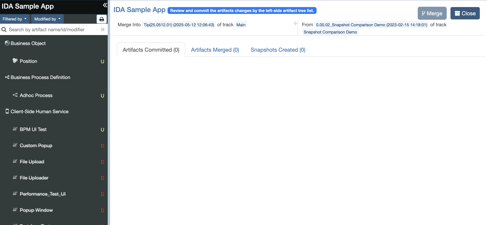
Menu
There are three types of changes: Add, Update, Delete.
If it is an add change, there will be a green A.
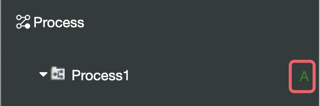
If it is an update change, there will be a yellow U.
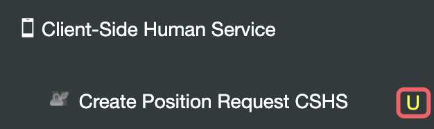
If it is a delete change, there will be a red D.
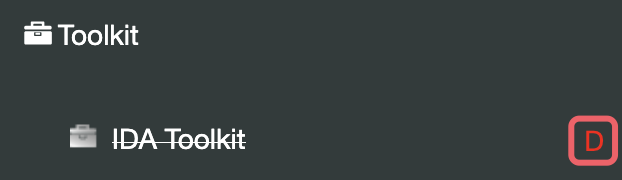
IDA provides a filter button. The user can filter the artifacts by Change Type/Artifact Type/Properties.
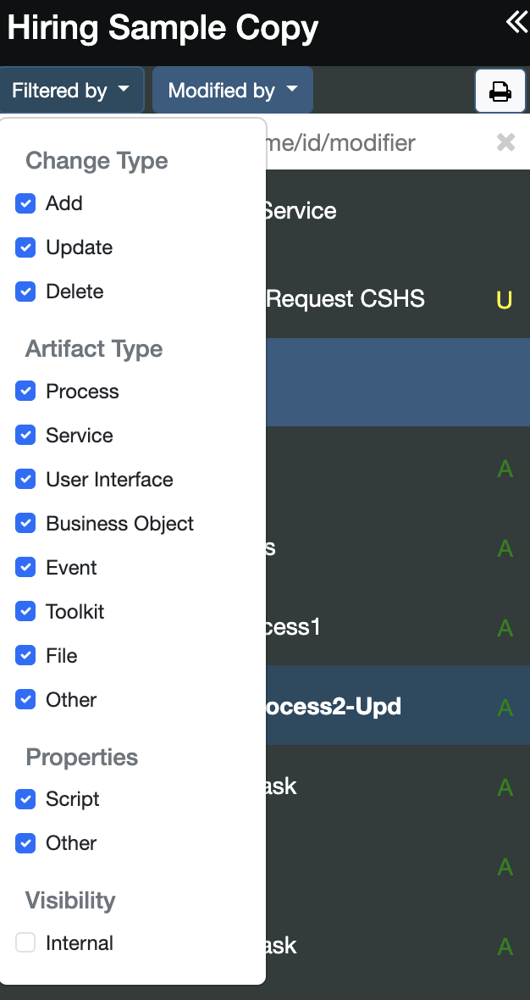
The user can filter the artifact by Editor.
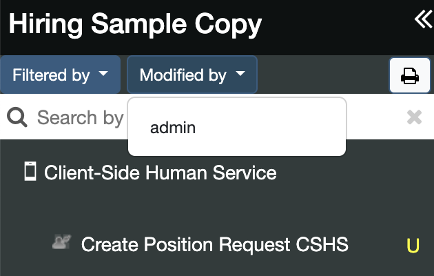
Change History
Comparative historical results of an artifact of the same branch.
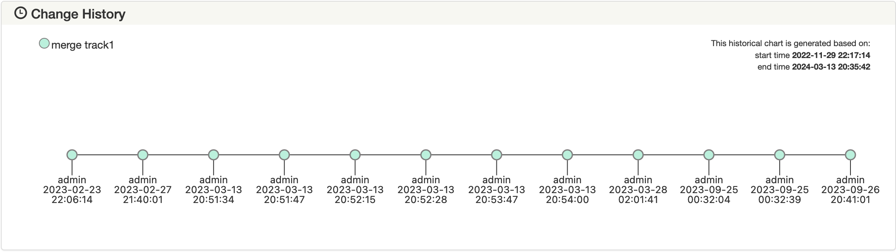
Comparative historical results of an artifact from different branches. The modification history of the old snapshot is at the top, and the modification history of the new snapshot is at the bottom.
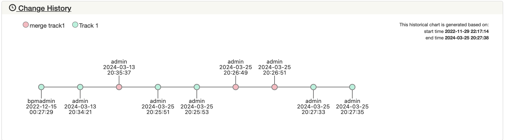
Artifact Merge Report
Click the item in the artifacts menu, and the artifact comparison report will change based on the clicked artifact.
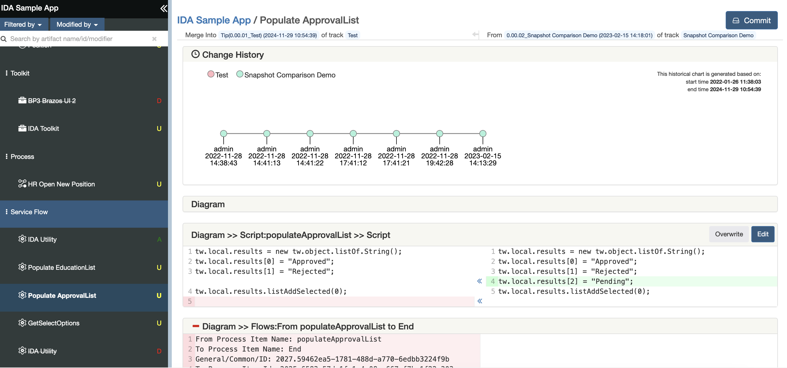
On top of the report is the basic information. The title displays the type and name of this artifact, below is the tip snapshot and source snapshot information.
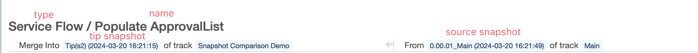
Script Merge
In the latest version, IDA supports script merging in Service Flow/Human Service/Process.
Script Editor
If the script can be merged, there will be three buttons on the panel on the right.
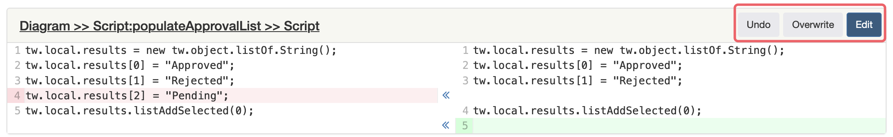
Click the
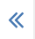
icon, and the right line will overwrite the left line.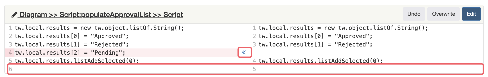
Click the
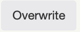
button, and the whole left script content will be overwritten by the right script content.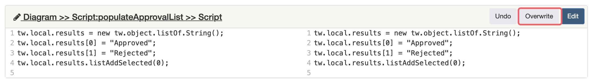
Click the
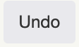
button, and the left script content will be reloaded as the tip (original snapshot) version.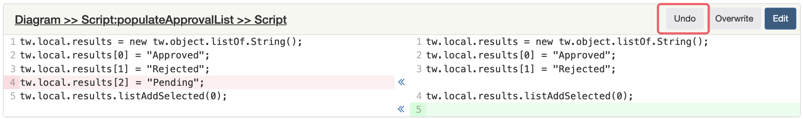
Click the button, and the Script Edit modal will show, allowing the user to edit the script.
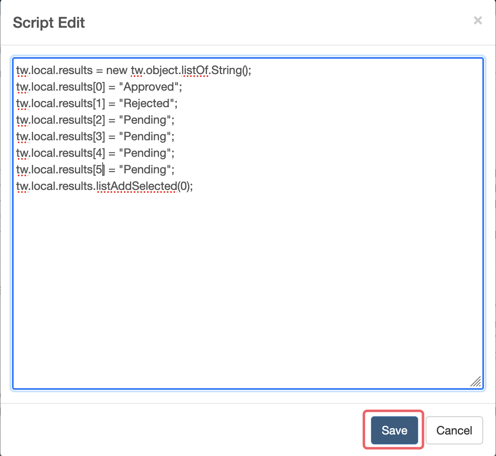
If pushed, there will be a button on the panel on the right.
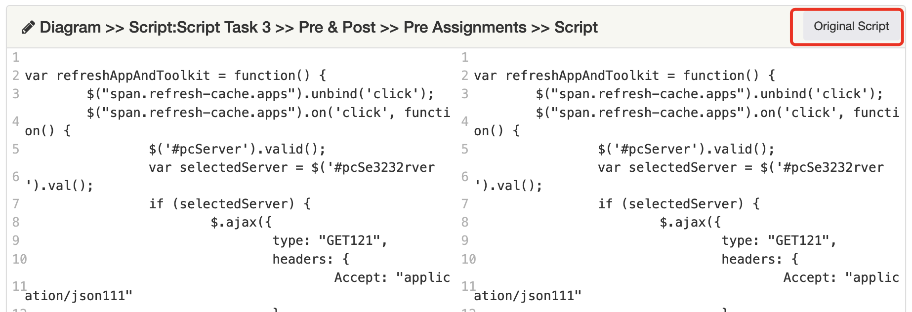
Click the Original Script button, and the Original Script modal will show, allowing the user to check the original script.
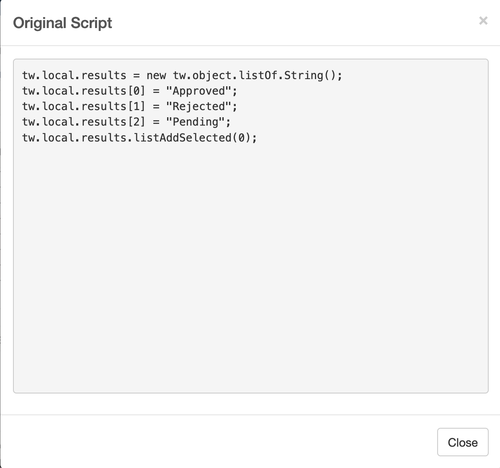
Undo All Changes
Click the Undo All Changes button, all the scripts changes will be reverted.
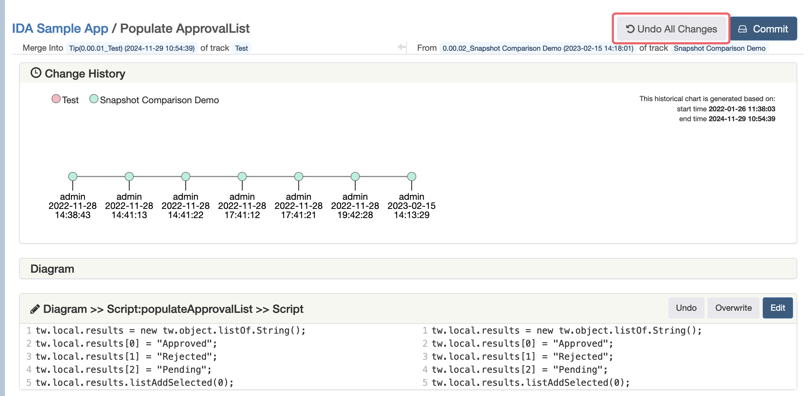
Commit And Undo
Click the button, if the change type is Update and there are some scripts changes in the Script Editor, an alert window will show as below. Click OK, and all the changes in this artifact will be saved to local.
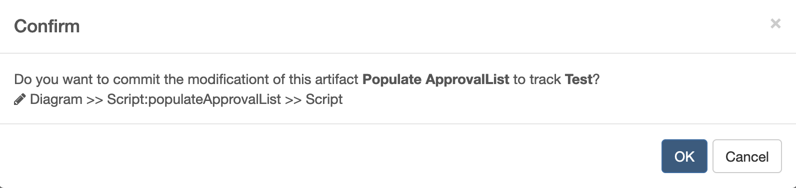
Click the button, if the change type is Update and there is no scripts changes in the Script Editor, an alert window will show as below. Click OK, the artifact will be overwritten and the changes will be saved to local.
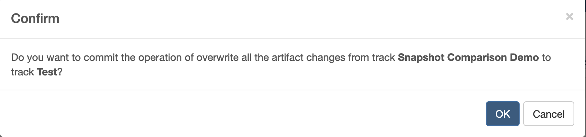
Click the button, if the change type is Add, an alert window will show as below. Click OK, the artifact will be added and the changes will be saved to local.
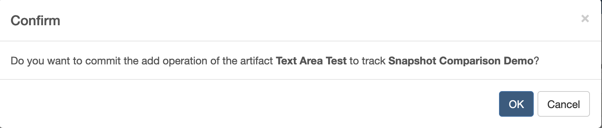
Click the button, if the change type is Delete, an alert window will show as below. Click OK, the artifact will be deleted and the changes will be saved to local.
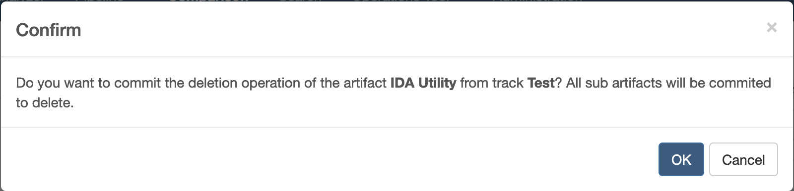
After committed successfully, the button will show. Click the button, and an alert window will show as below. Click OK, and all the changes will be reverted.
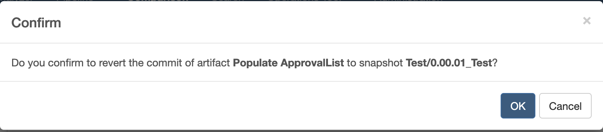
Merge
After completing the commit operations, click the name of the application and we can return to the commit details page. If you want to submit all commits in the Artifacts Committed tab page to the BAW server, click the button, a confirm window will pop up, and you can modify the name and comments of the snapshot created after the merge is successfully completed.
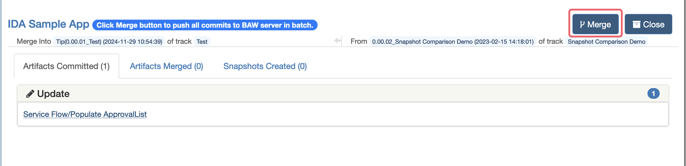
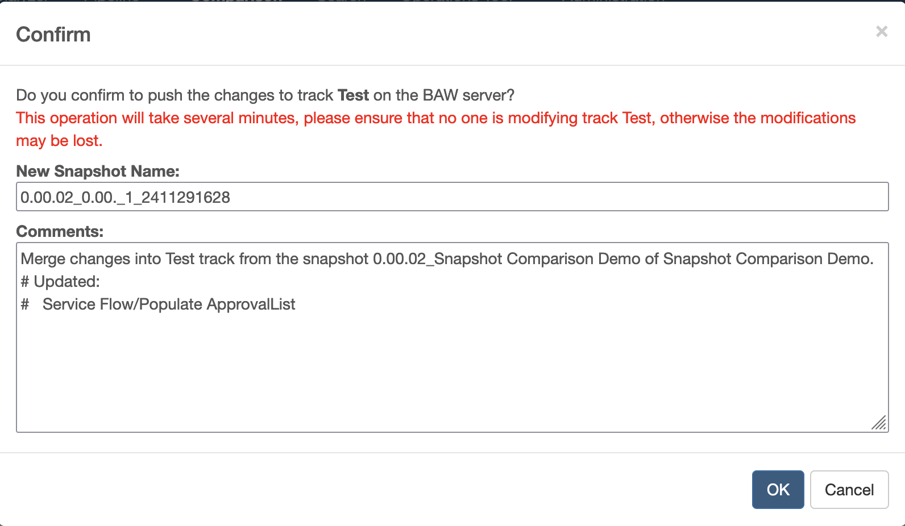
After the merge is completed, you can switch between the Artifacts Merged tab and the Snapshots Created tab to view the information.
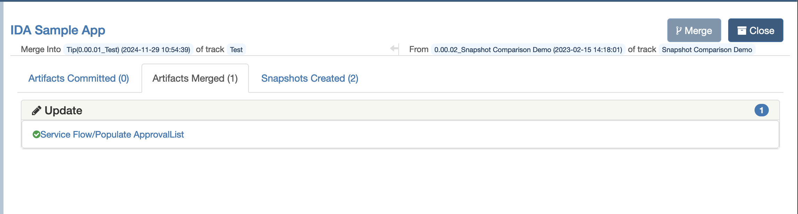
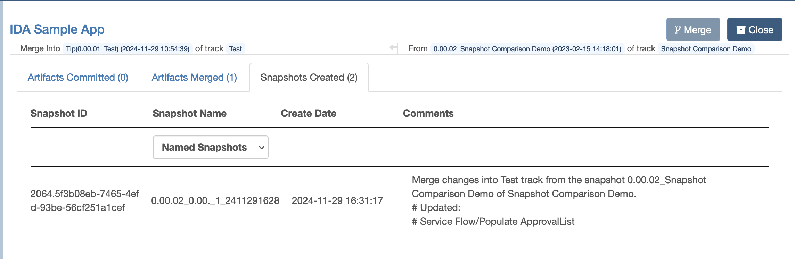
Close And Reopen
Click the Close button to close the report. After the report is closed, commit and merge operations can no longer be performed.
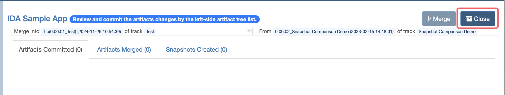
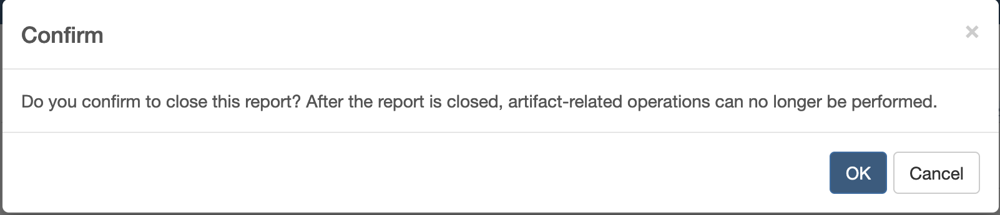
The closed report can be opened by clicking Reopen button.
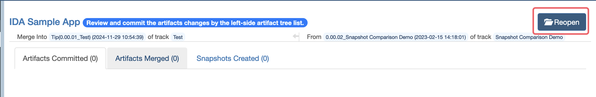